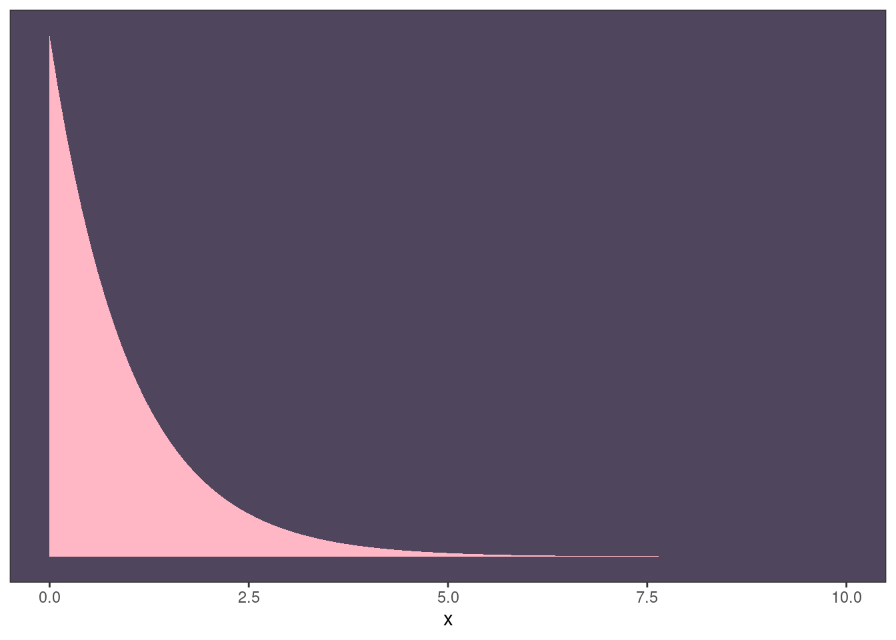
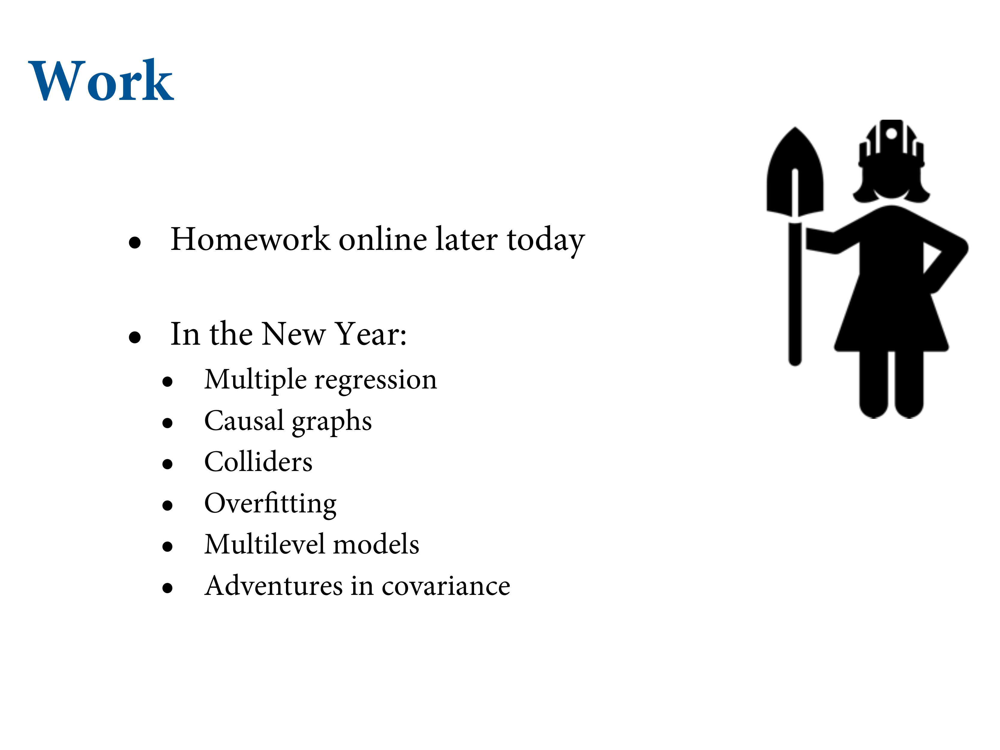

4.5 Curves from lines
![That's linear regression. The funny thing about it is not linear. Really linear regression is additive. You have an equation for $\mu$ which is a sum of a bunch of variables. We should call these additive regressions because you can use them to draw "lines" i.e. curves from lines. Why? There's no reason that nature should be populated by straight-line relationships. We routinely have reason to think about curvo-linear relationship. There are common strategies. The two most common are polynomial regression - the most common - involves adding a square term. Also pretty bad. Often it's used irresponsibly.The second is splines. Basis splines, probably the most common. Computer drawing software uses these. They don't exhibit the common pathologies of polynomials. But remember that they're geocentric models. So when you receive the information from the model, there's nothing mechanistic about this, and they can exhibit very strange behaviour outside of the range of the data.](slides/L04/17.png)
That’s linear regression. The funny thing about it is not linear. Really linear regression is additive. You have an equation for \(\mu\) which is a sum of a bunch of variables. We should call these additive regressions because you can use them to draw “lines” i.e. curves from lines. Why? There’s no reason that nature should be populated by straight-line relationships. We routinely have reason to think about curvo-linear relationship. There are common strategies. The two most common are polynomial regression - the most common - involves adding a square term. Also pretty bad. Often it’s used irresponsibly.The second is splines. Basis splines, probably the most common. Computer drawing software uses these. They don’t exhibit the common pathologies of polynomials. But remember that they’re geocentric models. So when you receive the information from the model, there’s nothing mechanistic about this, and they can exhibit very strange behaviour outside of the range of the data.
4.5.1 Polynomial regression

This is a descriptive strategy for drawing curves for the relationship between two variables. Second-order gives you a parabola. You can keep going - third order, fourth order. And on and on and on. You can push this to the limits of absurdity.

The data we’re going to use is the total sample. Now we’ll use the kids. Looking at this you can appreciate this isn’t a line. Instead, let’s fit a parabola.
d %>%
ggplot(aes(x = weight, y = height)) +
geom_point(color = "navyblue", shape = 1, size = 1.5, alpha = 2/3) +
annotate(geom = "text",
x = 42, y = 115,
label = "This relation is\nvisibly curved.",
family = "Times") +
theme(text = element_text(family = "Times"),
panel.grid = element_blank()) The relationship is visibly curved now that we’ve included the non-adult individuals.
The relationship is visibly curved now that we’ve included the non-adult individuals.

We can just glue on an epicycle here and square it. Why? So alpha can be the mean. Then you need to give it a new \(\beta\) coefficient. Setting priors for this is really hard, because \(\beta_2\) has no meaning. But the curve depends on \(\beta_1\) and \(\beta_2\), and they don’t work in isolation. The individual parameters don’t have meaning. It’s a horrible problem in interpretation. Otherwise it’s the same model. It’s a linear regression in the sense that it’s additive.

To get the machine to work, very useful to standardise the predictor variables. Center then divide by SD. Take weight, subtract the average weight from each weight value, then divide each of those 0-centered values by the standard deviation of weight. Takes weight and creates a set of z-scores. The fitting software works better on standardise values because it doesn’t have to guess the scale.

There’s a function in R called scale. All it does is subtract the mean, then divide by the standard deviation. Square the standardised weight.
# Standardise our weight variable
d <-
d %>%
mutate(weight_s = (weight - mean(weight)) / sd(weight)) %>%
mutate(weight_s2 = weight_s^2)
# Fit the model
b4.5 <-
brm(data = d,
family = gaussian,
height ~ 1 + weight_s + weight_s2,
prior = c(prior(normal(178, 20), class = Intercept),
prior(lognormal(0, 1), class = b, coef = "weight_s"),
prior(normal(0, 1), class = b, coef = "weight_s2"),
prior(uniform(0, 50), class = sigma)),
iter = 30000, warmup = 29000, chains = 4, cores = 4,
seed = 4,
file = "fits/b04.05")
plot(b4.5)
print(b4.5)## Family: gaussian
## Links: mu = identity; sigma = identity
## Formula: height ~ 1 + weight_s + weight_s2
## Data: d (Number of observations: 544)
## Samples: 4 chains, each with iter = 30000; warmup = 29000; thin = 1;
## total post-warmup samples = 4000
##
## Population-Level Effects:
## Estimate Est.Error l-95% CI u-95% CI Rhat Bulk_ESS Tail_ESS
## Intercept 146.03 0.38 145.29 146.78 1.01 1369 2019
## weight_s 21.75 0.29 21.17 22.33 1.00 1773 2031
## weight_s2 -7.77 0.28 -8.34 -7.25 1.01 901 935
##
## Family Specific Parameters:
## Estimate Est.Error l-95% CI u-95% CI Rhat Bulk_ESS Tail_ESS
## sigma 5.81 0.18 5.48 6.18 1.00 2472 2150
##
## Samples were drawn using sampling(NUTS). For each parameter, Bulk_ESS
## and Tail_ESS are effective sample size measures, and Rhat is the potential
## scale reduction factor on split chains (at convergence, Rhat = 1).![Cooked spaghetti. Now it has an infinite number of parabolas. Now we sample from the posterior, and we got a sample of the high-probability parabolas, a tiny slice of the whole space. And we draw them up, to start with, just 10 individuals. Over the full range, we get parabolas that vary wildly outside of the weights, but straight within the range of the data. This is a phenomenon that's always present. THe uncertainty intervals always fan out outside of the data range. This is a problem for prediction. Not true for splines. This is because every parameter acts globally on the shape. You can't tune a specfic region.](slides/L04/23.png)
Cooked spaghetti. Now it has an infinite number of parabolas. Now we sample from the posterior, and we got a sample of the high-probability parabolas, a tiny slice of the whole space. And we draw them up, to start with, just 10 individuals. Over the full range, we get parabolas that vary wildly outside of the weights, but straight within the range of the data. This is a phenomenon that’s always present. THe uncertainty intervals always fan out outside of the data range. This is a problem for prediction. Not true for splines. This is because every parameter acts globally on the shape. You can’t tune a specfic region.

Now we add the next 10, including some children, and the flailing stops. Now we get curves in a much smaller region of the parameter space.
Now it’s getting more concentrated.


Now a thick dark line. Conditional on wanting a parabola to describe the relationship, here are the parabolas. Doesn’t mean the parabola is correct.
fitted() and predict() wrangling..
weight_seq <-
tibble(weight_s = seq(from = -2.5, to = 2.5, length.out = 30)) %>%
mutate(weight_s2 = weight_s^2)
fitd_quad <-
fitted(b4.5,
newdata = weight_seq) %>%
data.frame() %>%
bind_cols(weight_seq)
pred_quad <-
predict(b4.5,
newdata = weight_seq) %>%
data.frame() %>%
bind_cols(weight_seq) Plot
p2 <-
ggplot(data = d,
aes(x = weight_s)) +
geom_ribbon(data = pred_quad,
aes(ymin = Q2.5, ymax = Q97.5),
fill = "grey83") +
geom_smooth(data = fitd_quad,
aes(y = Estimate, ymin = Q2.5, ymax = Q97.5),
stat = "identity",
fill = "grey70", color = "black", alpha = 1, size = 1/2) +
geom_point(aes(y = height),
color = "navyblue", shape = 1, size = 1.5, alpha = 1/3) +
labs(subtitle = "quadratic",
y = "height") +
coord_cartesian(xlim = range(d$weight_s),
ylim = range(d$height)) +
theme(text = element_text(family = "Times"),
panel.grid = element_blank())
p2When you have expert knoweldge, it is often easy to do better than a linear model. These models are geocentric devices for describing partial correlations. We should feel embarrassed to use them, just so we don’t become satisfied with the phenomenological explanations they provide.
It’s very sure, conditional on the shape, that that’s the parameter you want. Those lines don’t fit the data very well, but there’s almost no uncertainty about where they are. I’ve extended the data a bit, and you can see the quadratic bends down. It curves down because it has to. Cubic have to turn twice. Have to turn. Can’t be monotonic. For the cubic, we add our cubic term \(\beta_3\). Fits even better, but now it’s extrapolating upwards.

In this example, you had that outside of the range below the range. But this can also happen internally, when you have a gap in your data, and it’ll do silly things in between. The bigger problem is that the parameters all jointly determine the shape, so the model can’t tune them independently to create local fits. That’s why you get silly predictions. Polynomials aren’t that flexible, because the must turn, a certain number of times.
Cubics:
d <-
d %>%
mutate(weight_s3 = weight_s^3)
b4.6 <-
brm(data = d,
family = gaussian,
height ~ 1 + weight_s + weight_s2 + weight_s3,
prior = c(prior(normal(178, 20), class = Intercept),
prior(lognormal(0, 1), class = b, coef = "weight_s"),
prior(normal(0, 1), class = b, coef = "weight_s2"),
prior(normal(0, 1), class = b, coef = "weight_s3"),
prior(uniform(0, 50), class = sigma)),
iter = 40000, warmup = 39000, chains = 4, cores = 4,
seed = 4,
file = "fits/b04.06")
# Old linear model
b4.7 <-
brm(data = d,
family = gaussian,
height ~ 1 + weight_s,
prior = c(prior(normal(178, 20), class = Intercept),
prior(lognormal(0, 1), class = b, coef = "weight_s"),
prior(uniform(0, 50), class = sigma)),
iter = 40000, warmup = 39000, chains = 4, cores = 4,
seed = 4,
file = "fits/b04.07")
weight_seq <-
weight_seq %>%
mutate(weight_s3 = weight_s^3)
fitd_cub <-
fitted(b4.6,
newdata = weight_seq) %>%
as_tibble() %>%
bind_cols(weight_seq)
pred_cub <-
predict(b4.6,
newdata = weight_seq) %>%
as_tibble() %>%
bind_cols(weight_seq)
p3 <-
ggplot(data = d,
aes(x = weight_s)) +
geom_ribbon(data = pred_cub,
aes(ymin = Q2.5, ymax = Q97.5),
fill = "grey83") +
geom_smooth(data = fitd_cub,
aes(y = Estimate, ymin = Q2.5, ymax = Q97.5),
stat = "identity",
fill = "grey70", color = "black", alpha = 1, size = 1/4) +
geom_point(aes(y = height),
color = "navyblue", shape = 1, size = 1.5, alpha = 1/3) +
labs(subtitle = "cubic",
y = "height") +
coord_cartesian(xlim = range(d$weight_s),
ylim = range(d$height)) +
theme(text = element_text(family = "Times"),
panel.grid = element_blank())
fitd_line <-
fitted(b4.7,
newdata = weight_seq) %>%
as_tibble() %>%
bind_cols(weight_seq)
pred_line <-
predict(b4.7,
newdata = weight_seq) %>%
as_tibble() %>%
bind_cols(weight_seq)
p1 <-
ggplot(data = d,
aes(x = weight_s)) +
geom_ribbon(data = pred_line,
aes(ymin = Q2.5, ymax = Q97.5),
fill = "grey83") +
geom_smooth(data = fitd_line,
aes(y = Estimate, ymin = Q2.5, ymax = Q97.5),
stat = "identity",
fill = "grey70", color = "black", alpha = 1, size = 1/4) +
geom_point(aes(y = height),
color = "navyblue", shape = 1, size = 1.5, alpha = 1/3) +
labs(subtitle = "linear",
y = "height") +
coord_cartesian(xlim = range(d$weight_s),
ylim = range(d$height)) +
theme(text = element_text(family = "Times"),
panel.grid = element_blank())p1 | p2 | p3
Converting back to natural scale
at <- c(-2, -1, 0, 1, 2)
ggplot(data = d,
aes(x = weight_s)) +
geom_ribbon(data = pred_cub,
aes(ymin = Q2.5, ymax = Q97.5),
fill = "grey83") +
geom_point(aes(y = height),
color = "navyblue", shape = 1, size = 1.5, alpha = 1/3) +
coord_cartesian(xlim = range(d$weight_s)) +
theme(text = element_text(family = "Times"),
panel.grid = element_blank()) +
# here it is!
scale_x_continuous("standardized weight converted back",
breaks = at,
labels = round(at*sd(d$weight) + mean(d$weight), 1))
4.5.2 Splines

A common alternative is another geocentric model, which is also satisfying because it’s born from a physical system used to do the same thing. A spline is this metal bar on the draftsman’s table. It bends the line to allow drafters to draw smooth curves. This things still exist. The spline is the bar, and the weights are anchors, knots.

You can get a globally very wiggly function, with a bunch of local wiggly functions by putting them together. Very good for extrapolating. But remember they’re geocentric, so you have to understand how they work. The basis function is a local function, and the spline is made up of interpolating basis functions. Basis = “component”. Big wiggly function made up of less wiggly functions. The “P” stands for “penalised”.
Again, it’s a linear model, an additive equation for \(\mu\). But the predictor variables are not observed, rather synthetic data that defines the range of the curve that the parameter acts in. The actual predictor of interest will not appear in your model, but you’ll get a fantastic predictor of the relationship between the variables. There will be one weight for each of the basis functions. And the weights affect the range defined by the \(\beta\) variables.

New example. Let’s find something very wiggly. Climate data. Date of first cherry blossom bloom. Turns out there’s a very interesting relationship between the date of bloom, and the temperature. Big signature of climate change in this data.
library(rethinking)
data(cherry_blossoms)
d <- cherry_blossoms
rm(cherry_blossoms)
detach(package:rethinking, unload = T)Summarise the data:
d %>%
tidyr::gather() %>%
group_by(key) %>%
summarise(mean = mean(value, na.rm = T),
sd = sd(value, na.rm = T),
ll = quantile(value, prob = .055, na.rm = T),
ul = quantile(value, prob = .945, na.rm = T)) %>%
mutate_if(is.double, round, digits = 2)## # A tibble: 5 × 5
## key mean sd ll ul
## <chr> <dbl> <dbl> <dbl> <dbl>
## 1 doy 105. 6.41 94.4 115
## 2 temp 6.14 0.66 5.15 7.29
## 3 temp_lower 5.1 0.85 3.79 6.37
## 4 temp_upper 7.19 0.99 5.9 8.9
## 5 year 1408 351. 868. 1948.Plot doy against year
d %>%
ggplot(aes(x = year, y = doy)) +
# color from here: https://www.colorhexa.com/ffb7c5
geom_point(color = "#ffb7c5", alpha = 1/2) +
theme_bw() +
theme(panel.grid = element_blank(),
# color from here: https://www.colordic.org/w/, inspired by https://chichacha.netlify.com/2018/11/29/plotting-traditional-colours-of-japan/
panel.background = element_rect(fill = "#4f455c"))## Warning: Removed 388 rows containing missing values (geom_point).
1215 observations. Earliest date is little after 800. A few gaps. Earlier dates are getting temps from tree rings. Wiggles a lot. You can see there’s overlap. You’ll recognise the end of this trend. Our goal is to de-trend this temperature record. We want to look at micro-deviations.

Let’s start with a terrible approximation, and work forwards. Here’s the recipe. First choose the location of the knots. Here they are points where the basis spline pivots. Choose a degree of the basis function. Then choose degree of local spline. Then find the posterior distribution of weights. Run this just like any old linear regression.
Start with just 5 knots at equal quantiles. Large literature on this. Nice because it gives you more knots where there’s more data. One at the median, then one at each extreme, and one in between.
![Let's think about construction of these synthetic variables. Think of year. We'll never use them again. The knots are anchored at year, but then they're gone. Start with a degree 1 basis function (i.e. straight line). Wiggly function composed of straight line. Focus on the one in red. Basis fucntion 4 has its maximum value at the fourth knot. Only basis function with a non-zero value at that location. It's weight is determining the position of the spline at that point. As you move away, there are two basis functions that are turning on. Each of them have they're own precious parameter value. When you get to higher degress, they'll be curves. At any particular point (except at a knot), two of these basis functions will determine the value.](slides/L04/38.png)
Let’s think about construction of these synthetic variables. Think of year. We’ll never use them again. The knots are anchored at year, but then they’re gone. Start with a degree 1 basis function (i.e. straight line). Wiggly function composed of straight line. Focus on the one in red. Basis fucntion 4 has its maximum value at the fourth knot. Only basis function with a non-zero value at that location. It’s weight is determining the position of the spline at that point. As you move away, there are two basis functions that are turning on. Each of them have they’re own precious parameter value. When you get to higher degress, they’ll be curves. At any particular point (except at a knot), two of these basis functions will determine the value.
Let’s use 15 knots:
d %>%
count(is.na(doy)) %>%
mutate(percent = 100 * n / sum(n))## is.na(doy) n percent
## 1 FALSE 827 68.06584
## 2 TRUE 388 31.93416# Exclude missing cases
d2 <-
d %>%
drop_na(doy)num_knots <- 15
knot_list <- quantile(d2$year, probs = seq(from = 0, to = 1, length.out = num_knots))
knot_list## 0% 7.142857% 14.28571% 21.42857% 28.57143% 35.71429% 42.85714% 50%
## 812 1036 1174 1269 1377 1454 1518 1583
## 57.14286% 64.28571% 71.42857% 78.57143% 85.71429% 92.85714% 100%
## 1650 1714 1774 1833 1893 1956 2015Let’s see where they are:
d %>%
ggplot(aes(x = year, y = doy)) +
geom_vline(xintercept = knot_list, color = "white", alpha = 1/2) +
geom_point(color = "#ffb7c5", alpha = 1/2) +
theme_bw() +
theme(panel.background = element_rect(fill = "#4f455c"),
panel.grid = element_blank())## Warning: Removed 388 rows containing missing values (geom_point).
The next choice is polynomial degree. This determines how basis functions combine, which determines how the parameters interact to produce the spline. For degree 1, as in Figure 4.12, two basis functions combine at each point. For degree 2, three functions combine at each point. For degree 3, four combine.
B <- splines::bs(d2$year,
knots = knot_list[-c(1, num_knots)],
degree = 3,
intercept = TRUE)Make version of top panel of Figure 4.13:
# wrangle a bit
b <-
B %>%
data.frame() %>%
set_names(str_c(0, 1:9), 10:17) %>%
bind_cols(dplyr::select(d2, year)) %>%
pivot_longer(-year,
names_to = "bias_function",
values_to = "bias")
# plot
b %>%
ggplot(aes(x = year, y = bias, group = bias_function)) +
geom_vline(xintercept = knot_list, color = "white", alpha = 1/2) +
geom_line(color = "#ffb7c5", alpha = 1/2, size = 1.5) +
ylab("bias value") +
theme_bw() +
theme(panel.background = element_rect(fill = "#4f455c"),
panel.grid = element_blank())To see what’s going on, break it up with facet_wrap():
b %>%
mutate(bias_function = str_c("bias function ", bias_function)) %>%
ggplot(aes(x = year, y = bias)) +
geom_vline(xintercept = knot_list, color = "white", alpha = 1/2) +
geom_line(color = "#ffb7c5", size = 1.5) +
ylab("bias value") +
theme_bw() +
theme(panel.background = element_rect(fill = "#4f455c"),
panel.grid = element_blank(),
strip.background = element_rect(fill = scales::alpha("#ffb7c5", .25), color = "transparent"),
strip.text = element_text(size = 8, margin = margin(0.1, 0, 0.1, 0, "cm"))) +
facet_wrap(~ bias_function, ncol = 1)
This is the first time we’ve used an exponential distribution as a prior. They’re useful priors for scale parameters, parameters that must be positive. We’ll use exponential priors for the rest of the book, in place of uniform priors. They way to read an exponential distribution is to think of it as containing just an average deviation, which is inverse of the rate.
tibble(x = seq(from = 0, to = 10, by = 0.1)) %>%
mutate(d = dexp(x, rate = 1)) %>%
ggplot(aes(x = x, y = d)) +
geom_area(fill = "#ffb7c5") +
scale_y_continuous(NULL, breaks = NULL) +
theme_bw() +
theme(panel.background = element_rect(fill = "#4f455c"),
panel.grid = element_blank())

The only new trick here is to use linear algebra. You can imagine writing 5 terms. We have a prior for each of the weights. If you make it tighter, the curve gets less wiggly, and that’s why they call it a penalty. You want one so that you don’t overfit.
Add the B matrix to the d2 data frame.
d3 <-
d2 %>%
mutate(B = B)
# take a look at the structure of `d3
d3 %>% glimpse()## Rows: 827
## Columns: 6
## $ year <int> 812, 815, 831, 851, 853, 864, 866, 869, 889, 891, 892, 894,…
## $ doy <int> 92, 105, 96, 108, 104, 100, 106, 95, 104, 109, 108, 106, 10…
## $ temp <dbl> NA, NA, NA, 7.38, NA, 6.42, 6.44, NA, 6.83, 6.98, 7.11, 6.9…
## $ temp_upper <dbl> NA, NA, NA, 12.10, NA, 8.69, 8.11, NA, 8.48, 8.96, 9.11, 8.…
## $ temp_lower <dbl> NA, NA, NA, 2.66, NA, 4.14, 4.77, NA, 5.19, 5.00, 5.11, 5.5…
## $ B <bs[,17]> <bs[26 x 17]>b4.8 <-
brm(data = d3,
family = gaussian,
doy ~ 1 + B,
prior = c(prior(normal(100, 10), class = Intercept),
prior(normal(0, 10), class = b),
prior(exponential(1), class = sigma)),
iter = 2000, warmup = 1000, chains = 4, cores = 4,
seed = 4,
file = "fits/b04.08")
print(b4.8)Each of the 17 columns in our B matrix was assigned its own parameter.
Then plot the posterior predictions:
post <- brms::posterior_samples(b4.8)
glimpse(post)## Rows: 4,000
## Columns: 20
## $ b_Intercept <dbl> 103.7409, 104.2580, 103.1339, 104.6669, 105.2082, 105.4170…
## $ b_B1 <dbl> -6.4826048, -5.4990824, -2.1646605, 0.4607746, -9.0040921,…
## $ b_B2 <dbl> 3.74875270, -0.53550232, -0.42138745, -8.06386888, 0.66505…
## $ b_B3 <dbl> -4.2204293, -2.2608174, -0.9518396, -1.7896559, -8.0291467…
## $ b_B4 <dbl> 5.8833689, 4.7218957, 3.5397449, 3.2324508, 5.1640256, 5.9…
## $ b_B5 <dbl> -4.6338971, -2.0490845, -1.7740736, -1.4582729, -4.3913120…
## $ b_B6 <dbl> 6.00593380, 2.37093832, 6.60788828, 0.95493974, 2.78863329…
## $ b_B7 <dbl> -6.943649, -3.842189, -7.997412, -6.776613, -5.620181, -6.…
## $ b_B8 <dbl> 7.316514, 5.119854, 8.393274, 5.799375, 6.329872, 5.731784…
## $ b_B9 <dbl> -1.9490036, -0.2646558, -1.4861210, -1.3906578, -3.7449285…
## $ b_B10 <dbl> 3.9720418, 2.9088482, 4.1508398, 1.3121326, 2.3465406, 3.1…
## $ b_B11 <dbl> 3.6933735, 3.2552081, 2.3290076, 3.5780345, 1.4853387, 1.4…
## $ b_B12 <dbl> -0.2419564, -2.2181982, -0.6924766, -1.5380999, -1.3345390…
## $ b_B13 <dbl> 5.416313, 3.645593, 6.208850, 4.199717, 4.373958, 3.727896…
## $ b_B14 <dbl> 1.5023931, 2.6503143, 1.1680142, 1.9840733, -3.6880151, -4…
## $ b_B15 <dbl> -1.51102386, -4.81636227, 1.75411291, -3.42256204, -1.6810…
## $ b_B16 <dbl> -8.483994, -7.033578, -8.794870, -4.457966, -10.427317, -1…
## $ b_B17 <dbl> -9.947067, -10.641582, -8.199229, -8.768240, -7.976792, -8…
## $ sigma <dbl> 6.077514, 5.949900, 6.119600, 5.906621, 5.937513, 5.884939…
## $ lp__ <dbl> -2711.191, -2710.897, -2714.579, -2714.185, -2711.390, -27…post %>%
dplyr::select(b_B1:b_B17) %>%
set_names(c(str_c(0, 1:9), 10:17)) %>%
pivot_longer(everything(), names_to = "bias_function") %>%
group_by(bias_function) %>%
summarise(weight = mean(value)) %>%
full_join(b, by = "bias_function") %>%
# plot
ggplot(aes(x = year, y = bias * weight, group = bias_function)) +
geom_vline(xintercept = knot_list, color = "white", alpha = 1/2) +
geom_line(color = "#ffb7c5", alpha = 1/2, size = 1.5) +
theme_bw() +
theme(panel.background = element_rect(fill = "#4f455c"),
panel.grid = element_blank()) 
Finally, the 97% posterior interval for \(\mu\).
f <- fitted(b4.8)
f %>%
data.frame() %>%
bind_cols(d2) %>%
ggplot(aes(x = year, y = doy, ymin = Q2.5, ymax = Q97.5)) +
geom_vline(xintercept = knot_list, color = "white", alpha = 1/2) +
geom_hline(yintercept = fixef(b4.8)[1, 1], color = "white", linetype = 2) +
geom_point(color = "#ffb7c5", alpha = 1/2) +
geom_ribbon(fill = "white", alpha = 2/3) +
labs(x = "year",
y = "day in year") +
theme_bw() +
theme(panel.background = element_rect(fill = "#4f455c"),
panel.grid = element_blank())
Repeating the equation for \(mu\). Showing you the posterior mean weights multiplied by those basis functions. That’s what the predictor up top is. Focusing on the posteriro mean. There’s uncertainty here. What happens now is you’re adding those values together. Two lines get added together, and that determines prediction of temperature.
Resulting spline isn’t super wiggly. Depends on what you want to de-trend.
Re-do with 5 knots:
# redo the `B` splines
num_knots <- 5
knot_list <- quantile(d2$year, probs = seq(from = 0, to = 1, length.out = num_knots))
B <- splines::bs(d2$year,
knots = knot_list[-c(1, num_knots)],
# this makes the splines liner rater than cubic
degree = 1,
intercept = TRUE)
# define a new `d4` data
d4 <-
d2 %>%
mutate(B = B)
b4.9 <-
brm(data = d4,
family = gaussian,
formula = doy ~ 1 + B,
prior = c(prior(normal(100, 10), class = Intercept),
prior(normal(0, 10), class = b),
prior(exponential(1), class = sigma)),
iter = 2000, warmup = 1000, chains = 4, cores = 4,
seed = 4,
file = "fits/b04.09")
print(b4.9)## Family: gaussian
## Links: mu = identity; sigma = identity
## Formula: doy ~ 1 + B
## Data: d4 (Number of observations: 827)
## Samples: 4 chains, each with iter = 2000; warmup = 1000; thin = 1;
## total post-warmup samples = 4000
##
## Population-Level Effects:
## Estimate Est.Error l-95% CI u-95% CI Rhat Bulk_ESS Tail_ESS
## Intercept 103.46 4.57 94.27 112.27 1.01 673 1077
## B1 -0.32 4.65 -9.48 9.16 1.01 694 1124
## B2 1.49 4.60 -7.52 10.84 1.01 692 1048
## B3 1.57 4.60 -7.40 10.90 1.01 681 1117
## B4 3.99 4.59 -5.00 13.02 1.01 689 1140
## B5 -5.56 4.63 -14.64 3.76 1.01 685 1175
##
## Family Specific Parameters:
## Estimate Est.Error l-95% CI u-95% CI Rhat Bulk_ESS Tail_ESS
## sigma 6.10 0.15 5.82 6.41 1.00 2537 1993
##
## Samples were drawn using sampling(NUTS). For each parameter, Bulk_ESS
## and Tail_ESS are effective sample size measures, and Rhat is the potential
## scale reduction factor on split chains (at convergence, Rhat = 1).
Let’s do cubic splines. Most popular because they’re flexible but not crazy. Play around with the number of knots. What you’ll see is you can have too few knots, but at some point you’ll have enough that it won’t make much of a difference. This is what the basis functions look like, and now they’re wigglier, but they also overlap more, so now at a particular point you can have up to four basis curves overlapping.
![Here's with 50 samples from the posterior distribution. There's all this wiggle, and you add them together and get the spline. Some of these regions have substantial uncertainty about the weight. The uncertainty will collapse. At the parameter level, there's more uncertainty than there is at the prediction level. This is because the parameters combine to make a prediction. You can be uncertain about the values of the parameters, but you can be very certain about they're sum. Because if you make $w_3$ bigger, you have to make something else smaller. So when you plot the parameters, you'll see a lot more uncertainty than the predictions.](slides/L04/43.png)
Here’s with 50 samples from the posterior distribution. There’s all this wiggle, and you add them together and get the spline. Some of these regions have substantial uncertainty about the weight. The uncertainty will collapse. At the parameter level, there’s more uncertainty than there is at the prediction level. This is because the parameters combine to make a prediction. You can be uncertain about the values of the parameters, but you can be very certain about they’re sum. Because if you make \(w_3\) bigger, you have to make something else smaller. So when you plot the parameters, you’ll see a lot more uncertainty than the predictions.

Now when we add them, we get a pretty wiggly line. The amount of wiggliness depends on your scale of interest. Play around with the knots and degree and priors.
## top
# wrangle a bit
b <-
invoke(data.frame, d4) %>%
pivot_longer(starts_with("B"),
names_to = "bias_function",
values_to = "bias")
# plot
p1 <-
b %>%
ggplot(aes(x = year, y = bias, group = bias_function)) +
geom_vline(xintercept = knot_list, color = "white", alpha = 1/2) +
geom_line(color = "#ffb7c5", alpha = 1/2, size = 1.5) +
scale_x_continuous(NULL, breaks = NULL) +
ylab("bias value")
## middle
# wrangle
p2 <-
brms::posterior_samples(b4.9) %>%
dplyr::select(b_B1:b_B5) %>%
set_names(str_c("B.", 1:5)) %>%
pivot_longer(everything(), names_to = "bias_function") %>%
group_by(bias_function) %>%
summarise(weight = mean(value)) %>%
full_join(b, by = "bias_function") %>%
# plot
ggplot(aes(x = year, y = bias * weight, group = bias_function)) +
geom_vline(xintercept = knot_list, color = "white", alpha = 1/2) +
geom_line(color = "#ffb7c5", alpha = 1/2, size = 1.5) +
scale_x_continuous(NULL, breaks = NULL)
## bottom
# wrangle
f <- fitted(b4.9)
p3 <-
f %>%
data.frame() %>%
bind_cols(d2) %>%
# plot
ggplot(aes(x = year, y = doy, ymin = Q2.5, ymax = Q97.5)) +
geom_vline(xintercept = knot_list, color = "white", alpha = 1/2) +
geom_hline(yintercept = fixef(b4.9)[1, 1], color = "white", linetype = 2) +
geom_point(color = "#ffb7c5", alpha = 1/2) +
geom_ribbon(fill = "white", alpha = 2/3) +
labs(x = "year",
y = "day in year")
(p1 / p2 / p3) &
theme_bw() &
theme(panel.background = element_rect(fill = "#4f455c"),
panel.grid = element_blank())
Lots of different methods. There are ways of doing Bayesian splines where the number of knots is a parameter you can get a posterior distribution for. Why not just have a knot at every year.
